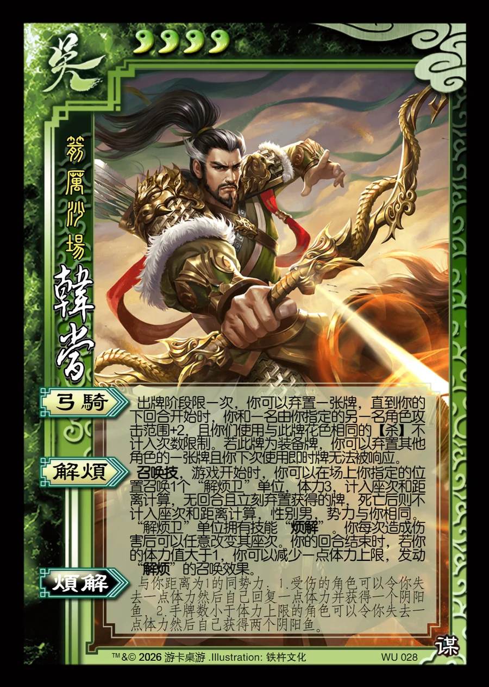

点击卡面查看大图
吴
军韩当
♥4箭厉沙场
弓骑
出牌阶段限一次，你可以弃置一张牌，直到你的下回合开始时，你和一名由你指定的另一名角色攻击范围+2，且你们使用与此牌花色相同的【杀】不计入次数限制。若此牌为装备牌，你可以弃置其他角色的一张牌且你下次使用即时牌无法被响应。
解烦召唤技
召唤技，游戏开始时，你可以在场上你指定的位置召唤1个“解烦卫”单位，体力3，计入座次和距离计算，无回合且立刻弃置获得的牌，死亡后则不计入座次和距离计算，性别男，势力与你相同。“解烦卫”单位拥有技能“烦解”。你每次造成伤害后可以任意改变其座次。你的回合结束时，若你的体力值大于1，你可以减少一点体力上限，发动“解烦”的召唤效果。
烦解衍生
与你距离为1的同势力：1.受伤的角色可以令你失去一点体力然后自己回复一点体力并获得一个阴阳鱼，2.手牌数小于体力上限的角色可以令你失去一点体力然后自己获得两个阴阳鱼。